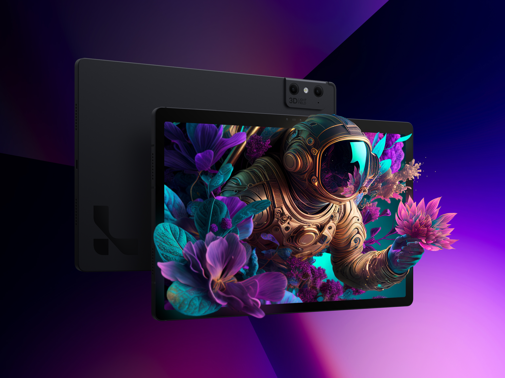

Home Page
: About Us : Services
: Contact Us : Tablets :
Phones : New Releases
:Help
Home Page
: About Us : Services
: Contact Us : Tablets :
Phones : New Releases
:Help
Home Page
: About Us : Services
: Contact Us : Tablets :
Phones : New Releases
:Help

Lumepad 2
The Lumepad 2 is the perfect tablet for digital graphic enthusiasts who like to create digital art. This tablet has a really high resolution and a really good screen to ensure the quality is seen. The tablet also has a good core to ensure it can keep up with the high quality resolution and can run applications to create designs.
Features:
Price: £880
Immersive 3D Viewing
The Lumepad 2 was made available April, 2023
3D Creator Tool
Fingerprint Sensor
SD Card Storage Extension
Built-in 3D Camera, AI Powered 3D Capture 5K pixels per view
120hz Display
Eyewear Free
Ipad Pro 4th Gen
This Ipad is perfect for people who are not well versed with technology, the GUI is very easy to go through even without a guide, Apple's IOS contains an AI named siri in which users can ask questions if needed a guide through the Ipad therefore making it easier for use even if you are not so well versed with technology.
Features:
Price: £609
4K Recording at 24 - 60 fps
The Ipad Pro 4th Gen has been released since,
March 25, 2020
12MP Ultra Wide Camera
Apple M2 processor
11 inch Screen Size
Facial Recognition
Liquid Retina display